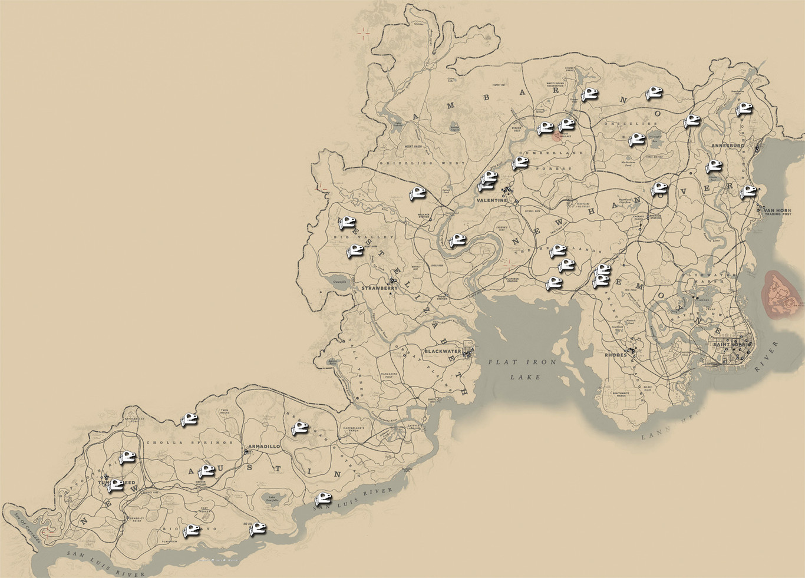

ğ•´ğ–“ğ–™ğ–—ğ–”ğ–‰ğ–šğ–ˆğ–ˆÃğ–”ğ–“
Red Dead Redemption 2 es un videojuego de acción-aventura del viejo oeste de mundo abierto​ con modo un jugador y multijugador. Es la precuela de Red Dead Redemption y el tercer juego de la saga Red Dead. El juego está ambientado doce años antes de los sucesos del primer tÃtulo presentando la historia de la Banda de Dutch Van Der Linde y cómo esta organización cayó en la decadencia.

𝕰𝖘𝖈𝖊𝖓𝖆𝖗𝖎𝖔
El mundo de Red Dead Redemption 2 abarca cinco estados ficticios de los Estados Unidos. Los estados de New Hanover, Ambarino y Lemoyne, New Austin y West Elizabeth. El mapa está bordeado por dos grandes rÃos: el San Luis y el Lannahechee, que desembocan en Flat Iron Lake. Ambarino es un desierto de montaña, siendo el asentamiento más grande una reserva de nativos americanos; New Hanover es un amplio valle que se ha convertido en un centro de la industria y es el hogar de la ciudad ganadera de Valentine; y Lemoyne se compone de pantanos y plantaciones que se parecen a Luisiana, y es el hogar de la ciudad sureña de Rhodes y la antigua colonia francesa de Saint Denis, análoga a Nueva Orleans. West Elizabeth se compone de amplias llanuras, densos bosques y la moderna ciudad de Blackwater. New Austin es una región árida y desértica centrada en las ciudades fronterizas de Armadillo y Tumbleweed, también presentada en el juego original.
𝕳𝖎𝖘𝖙𝖔𝖗𝖎𝖆
Dutch van der Linde y sus cómplices logran llegar hasta el pueblo minero de Colter en medio de una tormenta de nieve huyendo de las autoridades que los persiguen tras un violento asalto que salió mal en Blackwater, una ciudad en plena modernización. Buscando reagruparse y prepararse ante una eventual confrontación con la Agencia Nacional de Detectives Pinkerton y otros cuerpos de seguridad que los persiguen, Dutch, Micah Bell y el protagonista de esta historia, Arthur Morgan, llegan a una granja en la que aparentemente se celebraba una fiesta. Sin embargo, la situación se torna peligrosa al descubrir que los habitantes eran miembros de la banda de los O'Driscoll, una banda de forajidos que rivaliza con la banda de Dutch, por lo que tras matarlos a todos e incursionar al interior de la granja, descubren a una mujer que estaba cautiva por los delincuentes: su nombre es Sadie Adler y cuyo esposo habÃa sido asesinado por los O'Driscoll por lo que compadeciéndose de su situación, Dutch le permite unirse a su grupo de forajidos. Después de aquel encuentro con los O'Driscoll en esa granja, Dutch y sus hombres deciden asaltar el campamento de la banda en cuestión. Estando allÃ, Dutch y sus hombres también descubren que los O'Driscoll planeaban un asalto a un tren propiedad de un hombre llamado Leviticus Cornwall a lo cual deciden hacerse con esos planes. Hosea Mathews, amigo de Dutch y la voz de la razón dentro de la banda, se opone a la idea de robar el tren; éste le advierte a Dutch de lo peligroso que puede resultar meterse con los activos de Leviticus Cornwall ya que es un hombre muy poderoso e influyente, poseedor de importantes industrias en el paÃs y que además tiene varios contactos de peso en el gobierno aparte de ser uno de los principales fundadores y financiadores de la Agencia de Detectives Pinkerton.
La opinión de Hosea también es compartida por Arthur quien no está a favor del entusiasmo de Dutch quien cree que lo hace por su banda. De cualquier manera, la banda por obstinación de Dutch, ejecuta el asalto al tren robando una cantidad significativa de dinero para comenzar a preparar su escape encontrando en el camino a Valentine, su siguiente parada a John Marston, quien se perdió del grupo en medio de la huida de Blackwater durante la tormenta de nieve y se encontraba gravemente herido ya que fue atacado por una manada de lobos resultando con una gran cicatriz en su rostro. Estando establecidos temporalmente en el pueblo de Valentine, Arthur, aprovechando el deshielo, se lleva al hijo de John y Abigail, Jack, a pescar en el rÃo, pero son abordados por los agentes de los Pinkerton, Edgar Ross y Andrew Milton quiénes les dicen que saben que ellos fueron quienes asaltaron el tren por lo que a cambio de que les entreguen a Dutch, dejarán en paz al resto de la banda pero Arthur se niega. Al cabo de unos dÃas y mientras el grupo departÃa unos tragos en el saloon del pueblo, Leviticus Cornwall logró localizar a Dutch y su banda llegando acompañado de varios hombres fuertemente armados quienes tomaron a John y a Leopold Strauss, otro miembro de la banda como rehenes para obligar a Dutch y al resto a entregarse por el robo a su tren. Se desata entonces un intenso tiroteo en donde logran rescatar a sus compañeros y repeler a Leviticus por el momento. En ese punto al darse cuenta del peligro en el que se encontraban, Dutch y sus hombres deben emprender la huida de Valentine. Los efectos de este ataque hacen que Dutch vea horrorizado cómo la civilización y un código de leyes más severas estaban acabando con las personas como él, por lo que movido por el miedo decide ejecutar una serie de golpes a fin de reunir el dinero suficiente con el que podrÃan dejar esa dura vida y retirarse, y es asà que al cabo de unos meses, la banda llega al asentamiento de Rhodes en donde hay un conflicto entre las dos familias más influyentes del área, los Gray y los Braithwaite debido a que las familias se acusaban de ocultar un oro supuestamente encontrado durante la Guerra Civil Estadounidense.
El plan de Dutch consiste ahora en hacer amistad con ambas familias realizando diversos favores a ambas y manipular a sus miembros para que se pongan en contra hasta que se maten entre ellos y asà apoderarse del oro, sin embargo son descubiertos y en una emboscada preparada por la familia Gray, Sean Maguire, un amigo de la banda es asesinado, lo cual empeora cuando descubren que los Braithwaite por su parte secuestraron a Jack, el hijo de John y Abigail, ocasionando una violenta respuesta de los bandidos que asaltan la mansión para rescatar a Jack asesinando a toda la familia. Antes de incendiar la mansión familiar, la matriarca de los Braithwaite, Catherine les revela a los bandidos que vendieron a Jack a un acaudalado hombre de negocios italiano llamado Angelo Bronte que vive en Saint-Denis, una ciudad industrializada. A su llegada a dicha ciudad, sin un plan en mente, los forajidos encabezados por John llegan a la casa de Bronte, que a